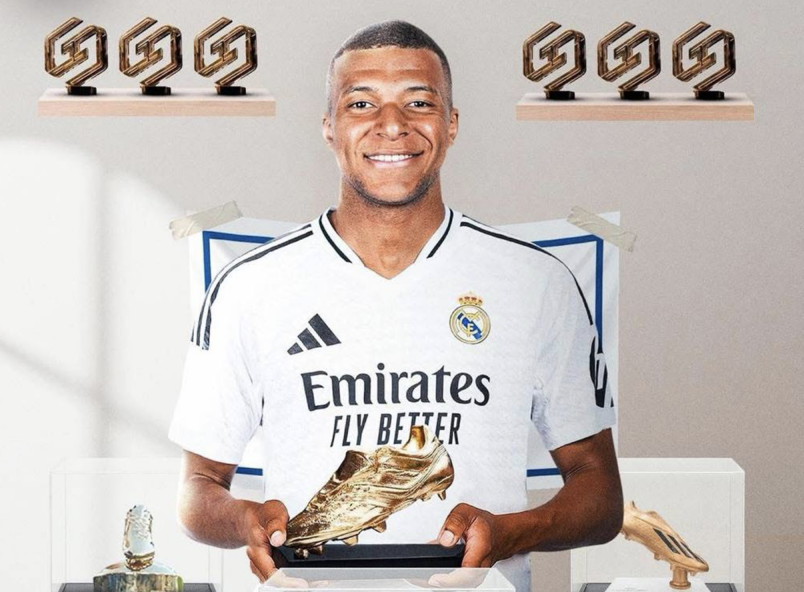

Килиан Мбаппе — обладатель Золотой Бутсы сезона 2024/25!
Нападающий "Реала" в 7-й раз стал лучшим бомбардиром чемпионата — 6 раз в Лиге 1 и в первый раз в Ла Лиге. Мбаппе становился лучшим бомбардиром Лиги Чемпионов 2023/24 и Чемпионата Мира-2022.
Также нападающий был признан лучшим игроком "Реала" в сезоне-2023/24.
Кроме того, нападающий стал лучшим ассистентом в истории сборной Франции и записал на свой счет 50 голов за сборную.